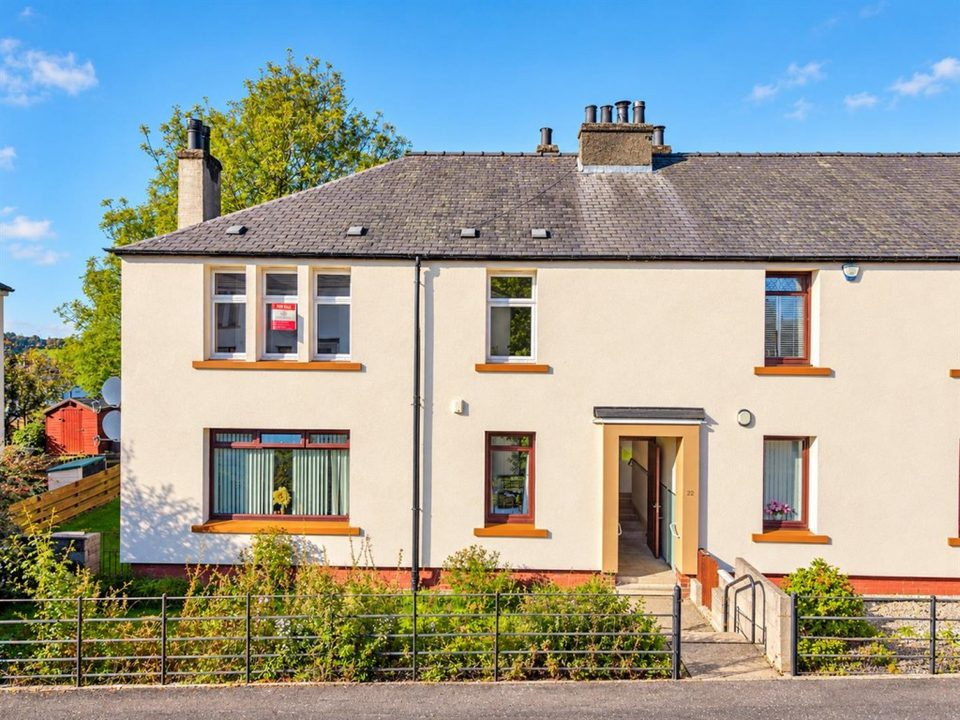
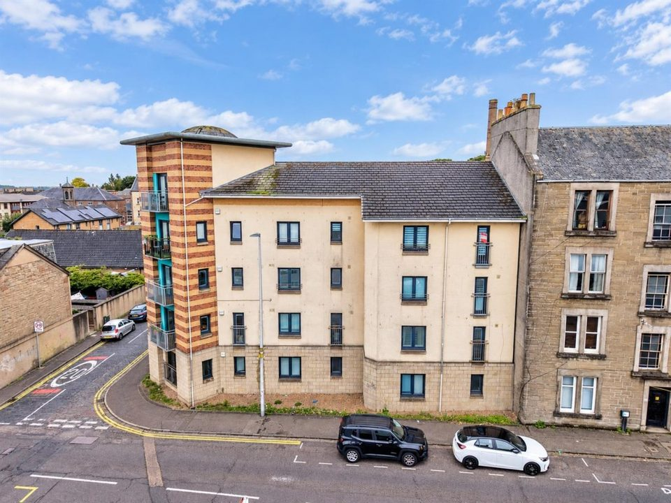
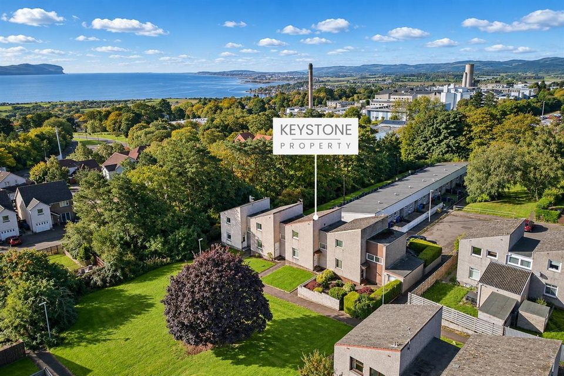
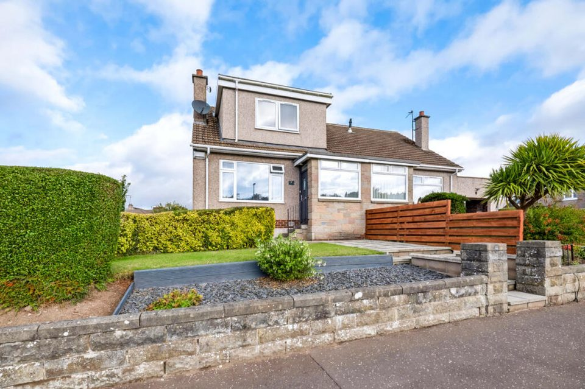
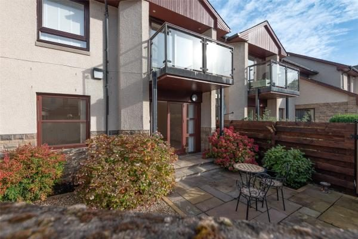

Flat3 bedrooms

£105,000Offers over
65b Sandeman Street, Dundee
Listed 13 October 2026 · Next Home
Original agent page unavailable; portal listing linked.
Daily property watch
Homes for sale · 2–3 bedrooms · Up to £270,000
Updated 13 October 2026 · 8 new · 97 in the archive
Listed 13 October 2026 · Next Home
Original agent page unavailable; portal listing linked.

Listed 12 October 2026 · McEwan Fraser Legal

Listed 12 October 2026 · Axis Property
Original agent page unavailable; portal listing linked.

Listed 12 October 2026 · Simple Approach Estate Agents

Listed 12 October 2026 · McCash Property Haus
Agent advertises two bedrooms and describes the front bedroom as subdivided to offer flexible 2/3-bedroom accommodation; Rightmove advertises three bedrooms.

Listed 12 October 2026 · Northwood - Dundee
First seen 13 October 2026; listing date unavailable · Gilson Gray
Original listing date unavailable. Matching individual TSPC URL verified by indexed exact address, two bedrooms and £140000; direct portal retrieval/access challenge blocked.

First seen 13 October 2026; listing date unavailable · Thorntons

First seen 11 October 2026; listing date unavailable · Richmond & Co
Original listing date unavailable. Includes off-site lock-up garage.
Original agent page unavailable; portal listing linked.

Listed 9 October 2026 · Purplebricks
Advertised garden upkeep contribution of £20 per month.

Listed 9 October 2026 · Rosie Fraser Real Estate
Listed 8 October 2026 · Axis Property
Original agent page unavailable; portal listing linked.
First seen 10 October 2026; listing date unavailable · Rosie Fraser Real Estate

Listed 8 October 2026 · Rosie Fraser Real Estate
The Home Report describes a third/top-floor flat; the agent describes the second floor. Number 58 is the individually numbered flat address in the Home Report.
First seen 9 October 2026; listing date unavailable · Gilson Gray

Listed 7 October 2026 · Keystone Property
Some advertising images are virtually staged.
Listed 6 October 2026 · Slater Hogg & Howison
Advertised address omits building/unit number; two-bedroom top-floor flat with allocated parking.
Original agent page unavailable; portal listing linked.

Listed 6 October 2026 · McIntyre Properties
Agent advert displays the address as Dalrymple Terrace, Dundee, 2 DD2; building number placement is unclear and has not been inferred.
Listed 6 October 2026 · Gilson Gray

First seen 7 October 2026; listing date unavailable · Lindsays
Original listing date unavailable; first discovered through recent TSPC inventory.